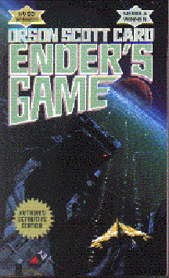

Ender's Gameby Orson Scott Card
Fiction, 324 pages | 
(book cover art, Copyright ©1991 TOR Science Fiction)
Used with Permission. |
Return to the Book MenuPrevious|Next
Description:
The story of Ender Wiggin, a child chosen to save humanity
in the Third Invasion. Ender's Game is a story of how Ender grows and learns
what he must do to become the greatest leader ever known. This story is
an excellent tale of how "gifted" children are driven to succeed - at any
cost.
Recommended for: fiction lovers, overachievers.
Did-you-read questions:
Deadline: February 1, 2005.
These should be easy questions, but you should have the questions ready and keep an eye out during your reading. Each question should be answered with 1-2 sentences.
Note: these questions are not probably not the most important part of the book! Your essay will not have to cover these questions!
- What are the names of Ender's siblings? (There are four names.)
- What does Ender do in the game to get past the mirror?
- Why does the old man who beats up Ender know so much about fighting?
- How did humanity win the second Invasion?
- Who or what is Dr. Device?
- What title does Ender take on at the end of the book?
Report Questions:Deadline: Peer Review Session on February 8, 2005; paper due February 10, 2005.
You should write a 3 - 4 page essay on one of the following questions. Your essay should include examples and references to the book, unless otherwise specified. Page number references are sufficient for citing material from the primary book. If you use outside materials, cite your sources in full. If you would rather write on a different topic, you may, but clear it with Mr. Howe or Ms. Sullivan first.
- As a student in an academically strong school, you may have been considered to
be an extra-bright student. What experiences have you gone through that
are similar to Ender's? Has this book changed the way you look at yourself?
- This story was written in 1977, but it foretold one major aspect of the
1990s: the Internet. How did the depiction of the Internet in the book
compare to what really is possible and limiting about today's Internet?
- In order to be the person he is, Ender is certainly a gifted child. What
do you think is his greatest gift, and why?
- Friendship is a rare and curious commodity in Ender's world. How does friendship
affect Ender's development as a warrior and as a person?
Graphic and Presentation:
Deadline: February 21 - March 3, 2005.You will give a 10 minute presentation on both of the following:
- Convince your peers that they should (or should not) read this book. (This may include a brief summary of the book.) Give examples of what was cool or worthwhile in the book, and what you got out of it (or didn't).
- Describe a (realistic) science idea that you learned about in this book, citing information from at least 2 external sources (other than the dictionary). If you would like help choosing or understanding an idea from your book, you are invited to come talk to Mr. Howe or Ms. Sullivan.
Note: This presentation should not be just a reading of your paper!Along with this presentation, you should have a graphic that will go with it. A Power Point presentation is recommended, but if you have a special idea for a something else, such as a model, an original video presentation, or a well done drawing/ painting/ sculpture/ etc., you may do so, provided it involves a similar level of effort and polish. Speak to Mr. Howe or Ms. Sullivan first if you are considering an alternate graphic format to the Power Point.
Return to the Book MenuPrevious|Next